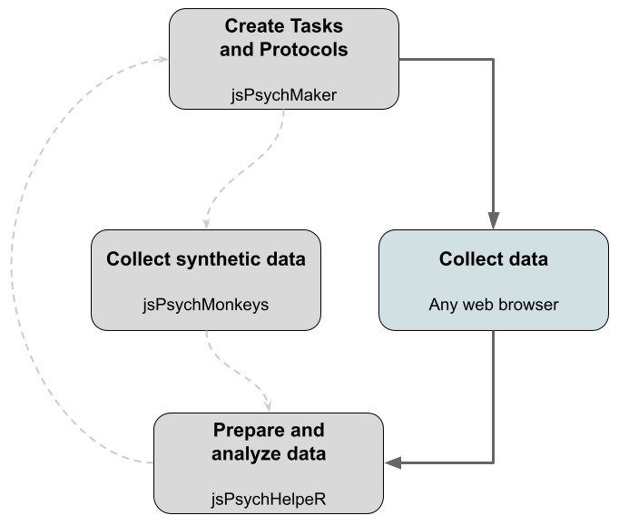

if (!require('jsPsychMaker')) remotes::install_github("gorkang/jsPsychMaker"); library('jsPsychMaker')
if (!require('jsPsychMonkeys')) remotes::install_github("gorkang/jsPsychMonkeys"); library('jsPsychMonkeys')
if (!require('jsPsychHelpeR')) remotes::install_github("gorkang/jsPsychHelpeR"); library('jsPsychHelpeR')9 Experimentos reproducibles
Paquetes para este capítulo
En el CSCN usamos distintas tecnologías para desarrollar experimentos. Algunos ejemplos son Psychopy, Qualtrics, Limesurvey, jsPsych, Gorilla, etc. Cada una de estas tiene ventajas y desventajas, y en general es importante tener en cuenta aspectos pragmáticos a la hora de adoptar una u otra tecnología (costo económico, tipo de experimento [EEG/conductual, laboratorio/online]).
Algunos de nosotros hemos optado principalmente por jsPsych para experimentos conductuales por tratarse de una librería javascript de código abierto, basada en tecnologías web standard, y que puede ser usada online y offline. Dado que en el CSCN disponemos de servidor propio, los costos habituales de hosting no se aplican.
En los últimos años, hemos empezado a trabajar en un conjunto de herramientas (jsPsychR) para crear experimentos usando la librería jsPsych con jsPsychMaker, simular participantes con jspsychMonkeys y estandarizar y automatizar la preparación de datos con jsPsychHelpeR.

Nuestro objetivo final es tener un gran número de tareas disponibles para ser usadas en el repositorio de jsPsychMaker. Cada una de estas tareas funcionará en jspsychMonkeys para crear participantes virtuales. Cada tarea tendrá un script hermano en jsPsychHelpeR para automatizar la preparación de datos.
Puedes consultar las tareas disponibles en el manual de jsPsychR para más detalles.
9.1 Pipeline experimental abierto y reproducible
Replicar el experimento de una publicación no es trivial. Una de las fortalezas fundamentales de nuestro sistema es que compartir y reproducir un experimento y los análisis asociados se convierte en algo muy sencillo.
Además, todos los componentes del proceso son código abierto, lo que permite que revisores, colaboradores, etc. puedan verificar que no hay errores en el código.
Con este sistema podremos crear fácilmente el código del experimento, simular datos y preparar datos de manera casi automática (incluyendo anonimización).
El output del sistema es estandarizado, lo que implica que los nombres de las variables y la estructura de datos son predecibles. Finalmente, la generación de gráficas, tablas, reportes y los análisis son reproducibles.
9.2 jsPsychMaker: Como crear un protocolo experimental
En el manual de jsPsychR puedes ver las tareas disponibles junto con una breve descripción de cada una de ellas. Alternativamente, puedes ver el documento con todos los detalles de las tareas disponibles, o simplemente ejecutar jsPsychMaker::list_available_tasks().
Si quieres consultar los scripts de las tareas puedes hacerlo en la carpeta canonical_protocol/ del repositorio de jsPsychMaker. Si quieres crear una nueva tarea para añadir a tu protocolo, puedes seguir las instrucciones de más abajo.
Para crear un protocolo con las tareas AIM, EAR e IRI, y abrirlo en un navegador:
jsPsychMaker::create_protocol(
# Pruebas a incluir
canonical_tasks = c("AIM", "EAR", "IRI"),
# El directorio tiene que incluir un número (se usará como pid)
folder_output = "~/Downloads/protocol999",
# Abre el navegador con el protocolo
launch_browser = TRUE
)Podemos editar la configuración del protocolo en la carpeta que hemos indicado en
folder_output, abriendo el archivoconfig.js. Puedes consultar la ayuda sobre la configuración de experimentos.El experimento esta listo para ser utilizado localmente. Si
launch_browser = TRUEse abrirá el navegador. En cualquier caso, podemos iniciar el experimento abriendoindex.htmlen tu navegador preferido.
Ejercicio 1
Diseña un sencillo protocolo:
Debes usar alguna de las tareas que aparecen en en manual (máximo 2)
Opcionalmente, puedes hacer primero el Ejercicio 2 de abajo, para añadir o adaptar una nueva tarea/escala muy sencilla
La duración total del “experimento” no debería superar los 5 minutos
Tendrás que hacer una breve presentación contándonos el diseño experimental.
Notas
(tareas jsPsychMaker): Usa un máximo de 2 tareas
9.3 jsPsychMonkeys: Como simular datos
El sistema para simular participantes utiliza Selenium dentro de un contenedor de Docker. En Linux es trivial su uso, pero en Windows su configuración puede ser más compleja.
Puedes seguir los siguientes pasos para preparar tu sistema:
Completa el setup para tu sistema operativo
Si no funciona, te, quedan las siguientes opciones:
- Correr un par de participantes manualmente
- Usar un ordenador con Linux o crear una partición Linux
- Crear una máquina virtual linux desde la que simular participantes. Puedes usar Virtualbox para instalar Ubuntu. Una vez dentro, tendrás que seguir los pasos del manual para prepara el sistema para correr R y RStudio
Para lanzar monos localmente:
# Un solo mono
jsPsychMonkeys::release_the_monkeys(
# Lanza un monos con el user id 1
uid = "1",
local_folder_tasks = "~/Downloads/protocol999")
# Monos del 1 al 5 simultaneamente
jsPsychMonkeys::release_the_monkeys(
# Lanza monos desde el uid 1 hasta el 5
uid = "1:5",
local_folder_tasks = "~/Downloads/protocol999",
# Lanza los monos en paralelo
sequential_parallel = "parallel",
# Usando este número de CPUs
number_of_cores = 5
)Puedes ver de los parametros disponibles en el Manual de jsPsychMonkeys.
9.4 jsPsychHelpeR: Como preparar datos
Cada tarea de jsPsychMaker debería tener un script hermano en jsPsychHelpeR para automatizar la preparación de datos. Una vez tengamos nuestro protocolo listo para el pilotaje, con una función de jsPsychHelpeR crearemos todo lo necesario para que la preparación de datos corra automáticamente.
Para crear y abrir un nuevo proyecto de RStudio con todo listo para correr la preparación de datos de tu protocolo:
jsPsychHelpeR::run_initial_setup(pid = '999',
data_location = "~/Downloads/protocol999/.data",
folder = "~/Downloads/jsPsychHelpeR999")En el nuevo proyecto, tendremos que correr la preparación de datos. Puedes abrir el archivo run.R, donde encontrarás algunas instrucciones básicas.
# Corremos el pipeline de preparación de datos
targets::tar_make()Para ver el data frame final listo para el análisis
# List available objects
targets::tar_objects()
# Load DF_analysis file
targets::tar_load(DF_analysis)
# See DF_analysis dataframe
DF_analysis
9.4.1 Como crear un reporte dentro del jsPsychHelpeR
Dentro del proyecto en el que has preparado los datos, simplemente tienes que:
- Abre la plantilla report_analysis.Rmd:
rstudioapi::navigateToFile("Rmd/report_analysis.Rmd")
- En el archivo
_targets.R, en la sección análisis, descomenta las dos líneas de abajo
# tar_render(report_analysis, "Rmd/report_analysis.Rmd",
# output_file = paste0("../outputs/reports/report_analysis.html")),
- Finalmente, puedes trabajar en report_analysis.Rmd tal y como hiciste en el capítulo anterior. Cuando acabes, o quieras probar si todo funciona bien, solo tienes que correr
targets::tar_make()desde la Consola.
Ejercicio FINAL
Ya estáis listas/os para enfrentaros al ejercicio FINAL
9.5 Avanzado
9.5.1 Como crear una nueva tarea
Tenemos un buen número de tareas disponibles para usar (puedes verlas en el manual de jsPsychR). Si la tarea que necesitas no está disponible, puedes crearla de distintas maneras:
Modificando alguna de las tareas que ya existen: tareas en jsPsychMaker
Usando las plantillas disponibles:
jsPsychMaker::copy_example_tasks(destination_folder = "~/Downloads/TEST")
Veamos como crear una nueva tarea a partir de documentos excel usando las plantillas disponibles. Ver ayuda:
- Copia las plantillas de tareas de ejemplo:
jsPsychMaker::copy_example_tasks(destination_folder = "~/Downloads/TEST")Ve a la carpeta indicada en
destination_folder, en este ejemplo~/Downloads/TEST, y borra todas las carpetas menos aquellas que correspondan al plugin que quieras usar. Por ejemplo,Slider.-
Adapta
Slider.csva tu nueva tarea:- Adapta
min,max,slider_start
- Copia las filas existentes tantas veces como ítems necesites
- Asegurate que los valores en la columna ID son correlativos
- Adapta
stimulus,labelsa tus items
- Adapta
-
Adapta los .html con tus instrucciones:
- Si necesitas más páginas de instrucciones, simplemente haz copias de las existentes
- Edita el contenido de los archivos html
Ejecuta
create_protocol()con los parámetros de abajo, se creará un nuevo protocolo con tu/tus tareas.
jsPsychMaker::create_protocol(
# Incluye la tarea EAR
canonical_tasks = "EAR",
# Crea e incluye las tareas que estan en esta carpeta
folder_tasks = "~/Downloads/TEST/",
# Crea el protocolo aquí
folder_output = "~/Downloads/TEST/new_protocol",
# Lanza un navegador
launch_browser = TRUE
)Ejercicio Optativo: Crear nueva tarea
Crea la siguiente tarea en jsPsychMaker:
- The Brief Resilience Scale (PDF version inglesa), o en su versión española
Notas
(tareas jsPsychMaker): Ver instrucciones en experimentos-reproducibles - como crear una nueva tarea
Si prefieres puedes implementar una tarea distinta a The Brief Resilience Scale. Los únicos requisitos son que sea breve y sencilla.
9.5.1.1 Corrección de la tarea
Para cada tarea en jsPsychMaker, aspiramos a tener un script de corrección en jsPsychHelpeR. Si has creado una nueva tarea, por favor, completa la información de NUEVAS Tareas jsPsychR para que podamos integrar tu tarea en el repositorio común.
9.5.1.2 Como preparar datos para una tarea nueva
Tendremos que crear primero el script de preparación para la nueva tarea. En jsPsychHelpeR tienes una tarea que te ayudará con esto. Si has completado los datos en NUEVAS Tareas jsPsychR, el proceso será muy sencillo.
- Instalamos jsPsychHelper:
if (!require('jsPsychHelpeR')) remotes::install_github("gorkang/jsPsychHelpeR"); library('jsPsychHelpeR')- Creamos el nuevo archivo
prepare_NOMBRETAREA():
jsPsychHelpeR::create_new_task(
short_name_task = "NAMETASK",
get_info_googledoc = TRUE
)Esta función:
- Creará un nuevo archivo de corrección a partir de la plantilla
- Lo adaptará para que funciones con el nombre que le has asignado a la tarea
- Abrirá el archivo para que lo puedas editar
Si hay información en todas las pestañas de NUEVAS Tareas jsPsychR, en la consola se mostrará información lista para copiar y pegar en tu script sobre:
nombres de dimensiones
ítems para cada dimensión
cálculo de dimensiones
ítems invertidos
conversión numérica